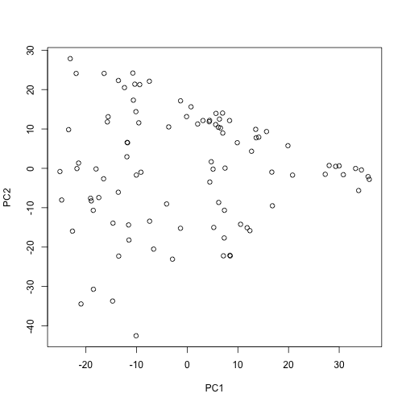

Converting_VCF_and_PLINK_formats.RmdPackage smartsnp is not a data-conversion tool. Inspired by the command-line tool SMARTPCA, smartsnp handles SNP datasets in text format and in SMARTPCA formats (uncompressed = EIGENSTRAT or compressed binary = PACKENDANCESTRYMAP) and a general genotype matrix format. However, both VCF (.vcf) and PLINK (.bed) formats are frequently used for storing genetic variation data. In this vignette we provide a quick and robust solution for how to transform these two formats into a general genotype matrix (i.e. where homozygous genotypes are coded as 0 or 2, and heterozygotes as 1) that can be used with the smartsnp package.
The general strategy is to use the plink2 software for transforming VCF or PLINK/bed files into a general (transposed) genotype matrix. It is “transposed” because PLINK and VCF files typically have samples in rows, whereas the general input file for smartsnp has samples in columns.
We make heavily use of the plink2 software, which is a comprehensive update to Shaun Purcell’s PLINK original command-line program. Binary downloads and an installation guide is available here: https://www.cog-genomics.org/plink2
In the PLINK manual, the file format that we transform our data into is called “.traw (variant-major additive component file)”. See here for more information: https://www.cog-genomics.org/plink/1.9/formats#traw
Note that the .traw format can be directly used with smartsnp, no further data transformation is necessary.
The R package sim1000G contains a small VCF, an unfiltered region from the 1000 genomes Phase III sequencing data VCF, chromosome 4, CEU samples. We will first load the package and then use this file as an example dataset.
library(sim1000G)
# First set the current working directory (cwd) to where you want to download the data to (note that the *Downloads* folder might not exist on your computer, e.g. if you have a Windows system):
oldwd <- getwd()
setwd("~/Downloads/")
examples_dir <- system.file("examples", package = "sim1000G")
vcf_file <- file.path(examples_dir, "region.vcf.gz")
file.copy(from = vcf_file, to = "./") # Copy the file to the cwd## [1] FALSEAs a first step, we show how to transform a VCF file into a PLINK/bed format. Note that the VCF is gzipped, but plink can directly use gzipped files.
We will use the system function for calling plink. This is effectively the same as running the quoted command on the command line.
system("plink --vcf region.vcf.gz --make-bed --out region")The –out parameter defines the name of the output file (without any suffix), you can set it to any arbitrary string. After running this command, you will see three files that make up the PLINK/bed format (region.bim, region.bed, region.fam). See the definition of the PLINK/bed (binary biallelic genotype table) file format for more information: https://www.cog-genomics.org/plink/1.9/formats#bed
The plink software offers a wide range of options for filtering and transforming the data that could be useful for your analysis. See the manual: https://www.cog-genomics.org/plink/1.9/
If you don’t want to make use of any further PLINK functionality, then you can also directly transform the VCF file into the .traw format. See section “Directly transforming VCF to raw genotype (.traw)” below.
Now we will use the plink software to transform the .bed file into raw genotypes. Again, note that we will need a “transformed” version since smartsnp assumes that samples are in columns, not rows.
system("plink --bfile region --recode A-transpose --out region_genotypeMatrix")Again, the –out parameter defines the name of the output file, without the suffix. After running this command, you will see a “region_genotypeMatrix.traw” file. This file can be directly used with smartsnp.
We could have skipped the intermediate step of transforming the VCF into a PLINK format. The plink software allows to directly transform the VCF into the .traw format.
system("plink --vcf region.vcf.gz --recode A-transpose --out region_genotypeMatrix")The VCF file just contained data from a single group (CEU). However, just to demonstrate that this file can be used with smartsnp we’ll run a simple pca analysis. Importantly, you will have to set the missing_value parameter to “NA”.
# First load one of the PLINK files to get the number of samples
numSamples = nrow(read.table("region.fam"))
# There is just a single group in this data
group_id <- rep(c("CEU"), length.out = numSamples)
# Running smart_pca
sm.pca <- smart_pca(snp_data = "region_genotype.traw",
sample_group = group_id,
missing_value = NA)
# Here is a plot of the first two components:
plot(sm.pca$pca.sample_coordinates[, c(3,4)])
Voila! Now to go back to the old working directory:
setwd(oldwd)